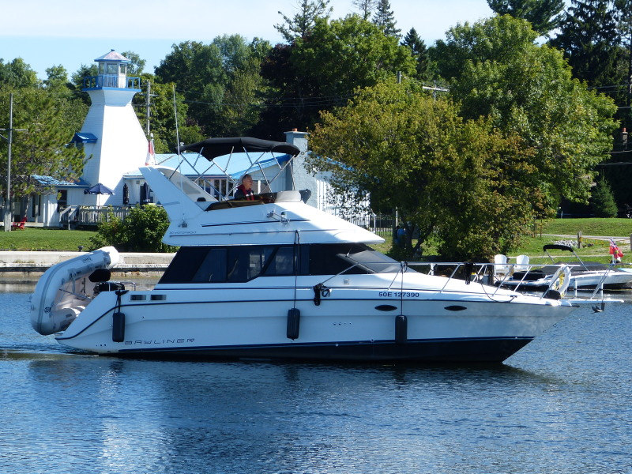

B-Atlas Boat Guide · BAYL-3058
Bayliner 3058 Command Bridge Command Bridge Cruiser
1991–1992
The Bayliner 3058 Command Bridge is a compact flybridge cruiser using twin sterndrives and a two-level cabin arrangement to provide more living space than many boats of similar length. The bridge and lower accommodation improve cruising versatility, while machinery access and twin-drive maintenance remain important ownership compromises.

- Length
- 31 ft
- Beam
- 10.83 ft
- Draft
- 3 ft
- Hull behaviour
- Planing
- Fuel
- Gasoline
- Propulsion
- Sterndrive
- Engine configuration
- Twin Inboard
- Boat family
- Cruiser
- Construction
- Fiberglass
Best for
- Family cruising where a flybridge is desirable
- Buyers wanting twin-engine handling below 32 feet
- Owners comfortable with sterndrive maintenance
Trade-offs
- Twin sterndrives create two complete drive systems to maintain
- Engine-room working space is limited
- Flybridge increases windage and bridge-clearance requirements
- Exact engine packages vary materially by year
Known concerns
- No model-specific concern has been promoted to B-Atlas’s evidence threshold. This does not mean the model has no age-, condition- or hull-specific risks.
Inspection focus
- Both sterndrives, transom assemblies and steering systems
- Engine-room access, mounts and cooling systems
- Flybridge structure, controls and wiring
- Fuel system and deck moisture
Continue researching
Related boat models
Bayliner 3055 Ciera Sunbridge / 305 SB Express Cruiser
31.5 ft · Planing
Bayliner 3218 Motoryacht Flybridge Motor Yacht
32.67 ft · Semi-Displacement
Bayliner 3258 Command Bridge Command Bridge Cruiser
32.92 ft · Planing
Bayliner 2855 Ciera Sunbridge Multi-Generation Sunbridge
28.08 ft · Planing
Bayliner 2859 Ciera Express Hardtop Cruiser
27.75 ft · Planing
Bayliner 3270 / 3288 Motor Yacht Explorer / Motor Yacht
32.08 ft · Semi-Displacement
About this record
B-Atlas preserves uncertainty: missing information remains unknown rather than being treated as a negative. Specifications and guidance describe the model record; individual boats can differ by year, equipment, refit and condition.